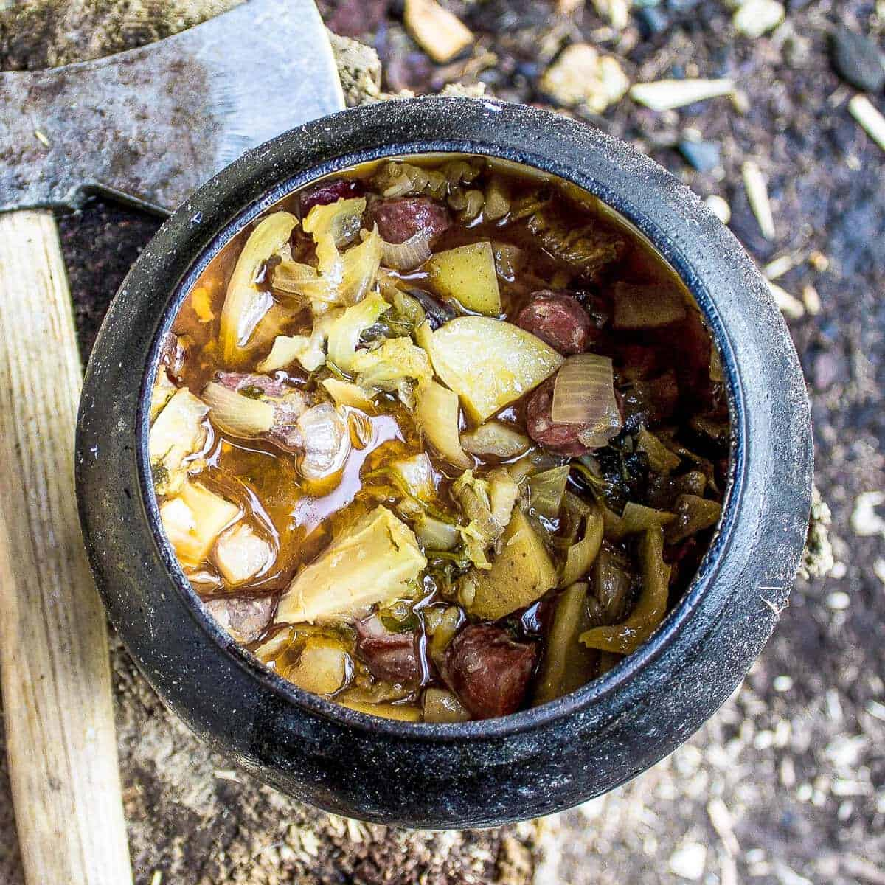

Crockpot Viking Stew

Description
Vikings used whatever they had at their disposal.
This recipe includes many variations as well as what to serve with it.
Ingredients
- Smoked Sausage - 450g
- 2 large onions
- 4 cloves of garlic
- 2 large potatoes
- bacon - 225g
- ½ cabbage
- ale - 500ml
- water - 500ml
Steps
- Place all the ingredients together into the pot and mix it well.
- Cook it at low medium temperature for about 5 hours monitoring
it every now and again adding water or stock if needed.
- Season with salt and pepper when done.
- You can also chop up some herbs(parsley, marjoram,
dill)and add it in when done.
Notes
This is a super easy recipe and method but play around with timings and heat
as no fire is the same.
Don't forget to keep the fire burning by
adding some wood every now and again.
Nutrition